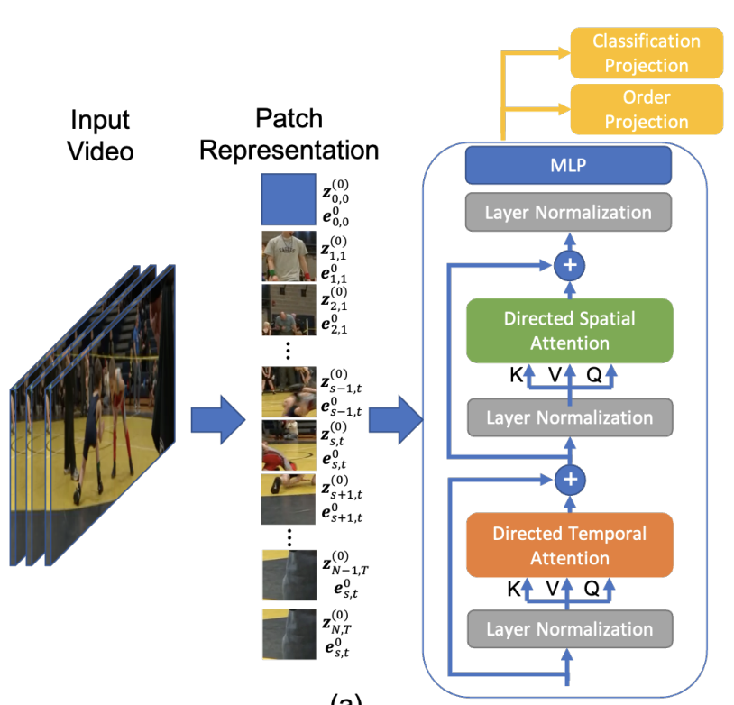

Emily Li - Projects
Here are some fun projects I have worked on!
BalletNetTrainer
is a machine learning-based correctional feedback instructor for ballet that analyzes
spatial-temporal dynamics in dancer motion data through pose estimation, a novel feature
angle extraction technique, and the dynamic time warping.
SlashNBash
is a real-time computer vision controlled multi-level fighter game with hit priority, timing mechanics, and full animation by deploying Google’s MediaPipe Pose Tracking & Landmarking model, utilizing OpenCV for webcam access and image processing. Code written in Python.

TAF Pose
or Temporal Affinity Fields (TAF) Pose is the first transformer-based pose estimation model that directly performs 2D tracking given temporal knowledge with spatio-temporal self-attention. This is an extension of similar work done by Truong et al in the task of video action recognition in DirecFormer.
Spectral Clustering.
I analyzed the theory behind dimensionality reduction and unsupervised spectral clustering
techniques such as K-means clustering, K-nearest neighbors and applied them to cluster music into their
genres based on ~200 features (e.g tempo). Implementations are in Julia.
Holo Tic Tac Toe
is a tic tac toe game controlled via the movement of a human hand using computer vision. I originally created this project for a workshop I taught at Hackclub’s Assemble hackathon.
eZeTrack
is an IOS mobile app that aims to reduces food waste by helping its user to track their food usage via an interactive smart digital fridge. In the app, the user can track expiration dates and also curate grocery shopping lists based on available stock in the fridge. App built in Xcode using C++.
Chess.
This is a 2-player chess game built in Python with Tkinter. Main features in addition to a basic working game include Check/Checkmate detection, En Passant, and Pawn Promotion.
Go back to Home